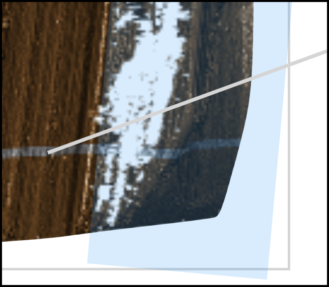
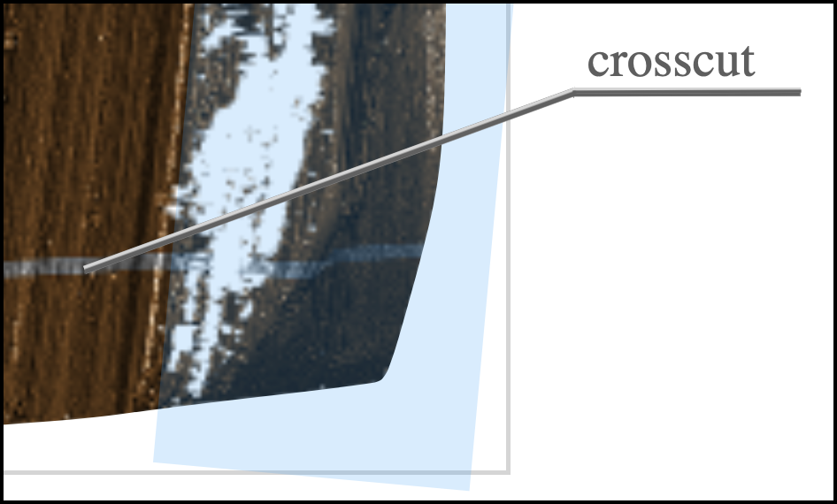
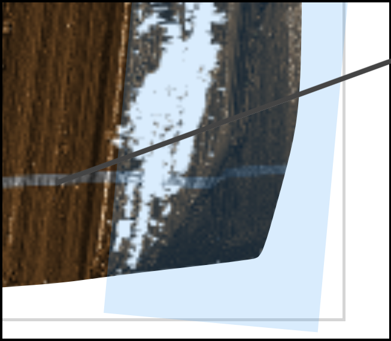
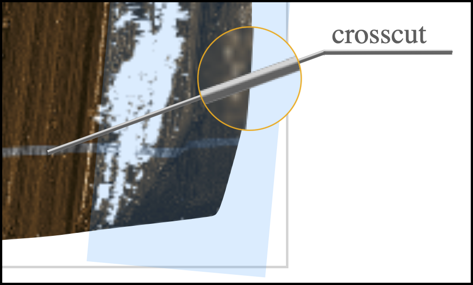
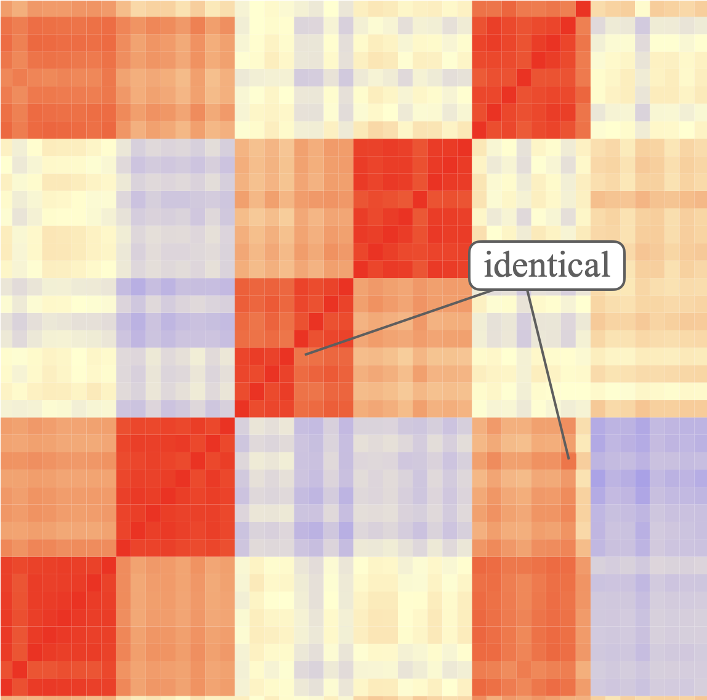
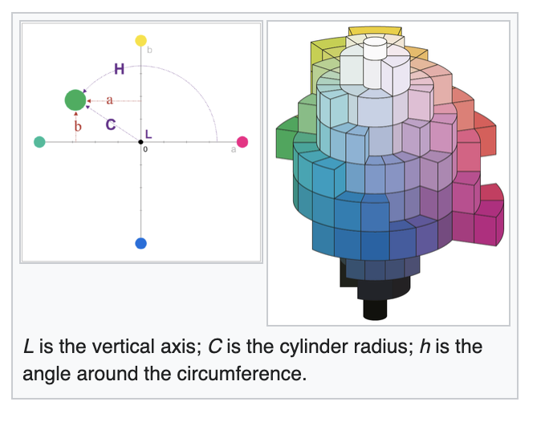

Can you see it now? – two-tone lines and annotations in ggplot2
Background
Using color in visualizations is tricky. Even while leaving the ‘best’ color choices to artists, the advice on using colors in data visualizations ranges from avoidance (Wong 2011) to not doing any harm (Tufte 1990).
We want to address one specific problem in choosing colors: that of making annotations on charts better visible. In the table below we show three strategies of using a pullout for annotating an element in a plot. The focus is on the line connecting the textual annotation to the plot element. Choosing a color for the connecting line that is both well visible on dark and light background is … difficult. As we see in the table, the light line (left image) disappears over light background, while the darker line (right image) disppears on the darker background. So which color was used to prevent the line from not disappearing in the middle image? The line is actually made up of two separate line segments in two different colors.
|  |  |  |
| light grey line | dark grey line |
|  |
With colors it always depends …
Colors are extremely context-sensitive, i.e. the way that we perceive a color is affected both by its physical and its conceptual context. The physical context of a color is given by the colors around it. The conceptual concept is given by our understanding of ‘the bigger picture’.
The colors in the marked tiles of the images in the table below are identical. The image on the left is an example where our perception of a color is changed by the colors around it. The tile on the left is in an area where most of the other tiles are a darker shade of red, whereas the surrounding tiles on the right are of a lighter shade of red than the marked tile. This tricks our perception, and for (most of) us the tile on the left appears to be lighter than the tile on the right. In the image on the right, the conceptual context is that of a checkerboard, ie. we expect to see dark and light tiles. The tile marked A is one the dark checkered tiles, while B marks one of the lighter tiles. Additionally, the green cylinder throws its shadow over the board. In its entirety this masks the fact that the colors in tiles A and B are identical.
|  |  |
| Physcial context: the two shades of red at the end point of the lines are identical. | Conceptual context: the colors in the tiles marked A and B are identical: checker shadow color illusion (Adelson 1995) |
Color models
Colors themselves are multivariate objects, i.e. each color is made up from different, sometimes related pieces that together create a color. There is a large number of models used to describe colors - one of the most familiar ones is the RGB model, which describes a color as a triplet of values between 0 and 255, describing the contributions of red, green, and blue to a color C, where black is denoted as (0,0,0), and white as (255,255,255). Because \(255 = 16^2 - 1\), a color can be written as a hexadecimal number of length six, where positions 1 and 2 describe the amount of red, positions 3 and 4 describe the amount of green, and the last two position describe the amount of blue. Colors in this parameterization are very common on the web and usually referred to as hexcolors.
Perceptually, the RGB model is not well suited, because we do not perceive colors as part red, green, and blue. A perceptually very useful model is the Munsell color space. Albert Munsell was a painter, and the color space is heavily influenced by a painter’s approach: this space describes a color by its hue on a color wheel (with colors ordered by their wavelength), the amount of color (or chroma) mixed into a base of grey (the ‘value’, a gradient of grey shades between black and white). While keeping similar parameterizations, the HCL color space has by now replaced Munsell colorspace. HCL is a perceptually uniform color space, ie. we differences between colors can be expressed as a distance. Colors that are the same distance apart are perceived as similarly different.
 |
 |
| Munsell color space, image © 2007, Jacob Rus | HCL or L * C * h(uv) |
Color contrast
Perceptually uniform color spaces allow us to address some questions of perception and visibility of colors in a quantitative manner. The contrast between two colors largely determines whether we see two different colors. Color contrast is defined by the W3C (World Wide Web Consortium) as the ratio of the relative luminances of two colors. In WCAG (Web Content Accessibility Guidelines (WCAG)) 2.0 minimal thresholds of this ratio are used to determine readability of text on background for different color combinations. Since these guidelines were published in 2008, research into color has not stopped, and in particular, the idea of contrasts between colors depending solely on their luminance should be discarded, see e.g. Lisa Charlotte Muth’s blog post. Most likely the WCAG 3.0 standard will contain some form of an updated color contrast algorithm, such as the APCA (Advanced Perceptual Contrast Algorithm).
Two-tone lines
Taking all of these different color aspects together, they provide a good basis of why a two-tone approach for lines will help with visibility:
- Using a light and a dark shade of the same hue in side-by-side lines makes the visibility of the line less dependent on the background: in dark areas, the lighter shaded line has a higher contrast, while in light backgrounds the darker line raises the contrast.
- If the overall line width is thin, the two tones in the line will likely stay below the detection threshold by a viewer, but won’t likely add to any confusion when detected.
Rather than manually drawing suitable lines for each annotation, we seek an implementation that directly extends the ggplot2 (Wickham 2016) plotting environment.
Details of your coding project
The goal of this project is to create an R package extending ggplot2 functionality by implementing a seamlessly integrated geom for a two-tone colored line.
What you will need to bring: good R coding skills, good knowledge of the ggplot2 framework, and the interest to look deeper under the hood of ggplot2 and the grid package.
Expected impact
Mentors, please explain how this project will produce a useful package for the R community.
Mentors
Contributors, please contact mentors below after completing at least one of the tests below.
- EVALUATING MENTOR: Haley Jeppson hjeppson@niss.org is the author of the R package
ggmosaic. - Heike Hofmann heike.hofmann@gmail.com is an expert in data visualization, author of the R packages
ggpcp,x3ptools,bulletxtrctr, among others, and has previous GSOC experience with the R organization in 2016, 2017, and 2019.
Tests
Contributors, please do at least two of the following tests before contacting the mentors above.
Easy Test:
Install the package colorspace (Zeileis, Hornik, and Murrell 2009; Zeileis et al. 2020) implements functionality for working with colors. The function colorspace::contrast_ratio provides an assessment of the contrast ratio between two or more colors using both the WCAG 2.0 standard and the newer APCA algorithm. Write a function that samples a set of colors,
- assesses their color contrast (in either WCAG or APCA) to a light grey, such as “#eeeeee”, and a dark grey, such as “#111111”.
- then visualizes a color tile labelled with the hexcode of the color and the contrast ratio. The labelling should be in the color that provides the greater contrast.
Medium Test:
Chapter 21 of Hadley Wickham’s book “ggplot2: Elegant Graphics for Data Analysis” describes how to extend ggplot2.
Write a geom called GeomSegmentDual that extends the regular ggplot2 GeomSegment. Implement the function draw_panel to allow for two calls to segmentsGrob drawing two sets of lines side by side as shown below. You will find the function convertHeight to be of importance. What does the call convertHeight(unit(.pt,"pt"), unitTo = "npc", valueOnly = TRUE) in draw_panel return?
draw_panel <- function(self, data, panel_params, coord, arrow = NULL, arrow.fill = NULL,
lineend = "butt", linejoin = "round", na.rm = FALSE) {
...
s1 <- segmentsGrob( ...) # color segments in color 1
s2 <- segmentsGrob( ...) # color segments in color 2
return(gList(s1, s2))
}Hard Test:
Wrap the two function from the easy and the medium test into an R package. Add documentation with some examples of use cases. Make sure that your package passes R CMD check.
Solutions of tests
Contributors, please post a link to your test results here.
- EXAMPLE CONTRIBUTOR 1 NAME, LINK TO GITHUB PROFILE, LINK TO TEST RESULTS.